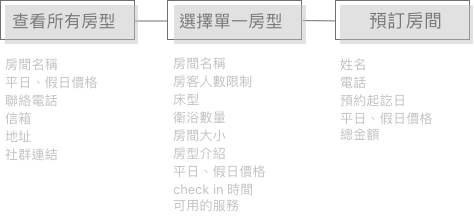

旅館預約服務
Side Project / 串接 API / 網頁切版查看網頁

"White Space 旅館預約服務" 是六角學院與 Adobe XD Taiwan 舉辦的前端精神時光屋，其中之一的專案主題，主辦單位先提供 User
story，由 UI 設計師產出 Mock
up 後，前端工程師選出喜愛的介面，再接續撰寫網頁程式。
在 White Space 旅館預約服務的專案中，擔任前端工程師的角色，負責項目為網頁切版、串接 API。
Ｗhite Space 的首頁能看到所有房型，點擊後便會開啟單一房型內頁，使用者可以查看該房型的詳細資訊，例如房型介紹、平日價格（一～四）、假日價格（五～日）、check in 時間、其他服務。在客戶填寫姓名、電話、預約起訖日後，可以看到房間總價格並進行線上訂房。
